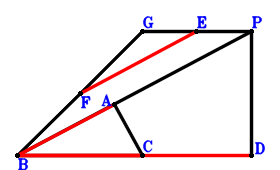
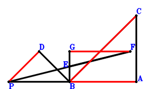
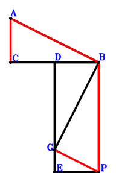
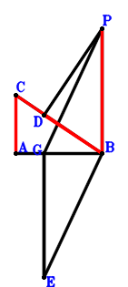
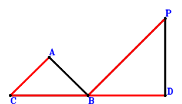
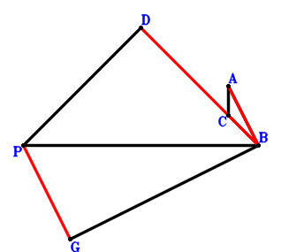
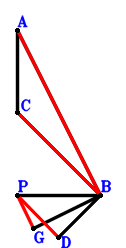
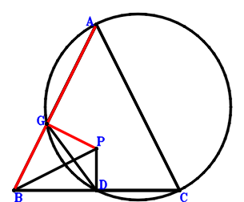
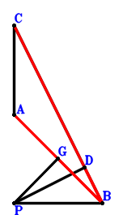

Exercise 255： Let DPAC be a cyclic quadrilateral, DC intersects PA at B. CA⊥PB. Prove that CB⊥PD.
Answer：
\(\because \) DPAC is a cyclic quadrilateral, DC intersects PA at B \(\therefore - \small\overrightarrow{BA} \cdot \small\overrightarrow{BP} + \small\overrightarrow{BC} \cdot \small\overrightarrow{BD}=0\) . . . . . . \(①\)\(\because \) CA⊥PB \(\therefore \small\overrightarrow{CA} \cdot \small\overrightarrow{PB}=- \small\overrightarrow{BP} \cdot \left(\small\overrightarrow{BA} - \small\overrightarrow{BC}\right)=- \small\overrightarrow{BA} \cdot \small\overrightarrow{BP} + \small\overrightarrow{BC} \cdot \small\overrightarrow{BP}=0\) . . . . . . \(②\)In conclusion, \(\small\overrightarrow{CB} \cdot \small\overrightarrow{PD}=- \small\overrightarrow{BC} \cdot \left(\small\overrightarrow{BD} - \small\overrightarrow{BP}\right)=- \small\overrightarrow{BC} \cdot \small\overrightarrow{BD} + \small\overrightarrow{BC} \cdot \small\overrightarrow{BP}=-①+②=0\), that is, CB⊥PD.
Exercise 264： Let E, F be the midpoints of PG, GB, respectively. CA⊥PB and CB⊥PD. Given that C, D, B are collinear and AB//EF, prove that \(CB·DB=2·AB·EF\).

Answer：
\(\because \) E is the midpoint of PG \(\therefore \small\overrightarrow{BE}=\dfrac{\small\overrightarrow{BG}}{2} + \dfrac{\small\overrightarrow{BP}}{2}\).\(\because \) F is the midpoint of GB \(\therefore \small\overrightarrow{BF}=\dfrac{\small\overrightarrow{BG}}{2}\).\(\because \) CA⊥PB \(\therefore \small\overrightarrow{CA} \cdot \small\overrightarrow{PB}=- \small\overrightarrow{BP} \cdot \left(\small\overrightarrow{BA} - \small\overrightarrow{BC}\right)=- \small\overrightarrow{BA} \cdot \small\overrightarrow{BP} + \small\overrightarrow{BC} \cdot \small\overrightarrow{BP}=0\) . . . . . . \(①\)\(\because \) CB⊥PD \(\therefore \small\overrightarrow{CB} \cdot \small\overrightarrow{PD}=- \small\overrightarrow{BC} \cdot \left(\small\overrightarrow{BD} - \small\overrightarrow{BP}\right)=- \small\overrightarrow{BC} \cdot \small\overrightarrow{BD} + \small\overrightarrow{BC} \cdot \small\overrightarrow{BP}=0\) . . . . . . \(②\)In conclusion, \(2 \small\overrightarrow{AB} \cdot \small\overrightarrow{EF} - \small\overrightarrow{CB} \cdot \small\overrightarrow{DB}=- 2 \small\overrightarrow{BA} \cdot \left(- \small\overrightarrow{BE} + \small\overrightarrow{BF}\right) - \small\overrightarrow{BC} \cdot \small\overrightarrow{BD}=\small\overrightarrow{BA} \cdot \small\overrightarrow{BP} - \small\overrightarrow{BC} \cdot \small\overrightarrow{BD}=-①+②=0\)\(\because\) C, D, B are collinear and AB//EF \(\therefore\) \(CB·DB=2·AB·EF\).
Exercise 266： Let DPBE be a parallelogram. AB⊥PG and AC⊥PB. Given that A, G, B are collinear and CB//DE, prove that \(AB·GB=CB·DE\).
Answer：
\(\because \) DPBE is a parallelogram \(\therefore \small\overrightarrow{BE}=\small\overrightarrow{BD} - \small\overrightarrow{BP}\).\(\because \) AC⊥PB \(\therefore \small\overrightarrow{CA} \cdot \small\overrightarrow{PB}=- \small\overrightarrow{BP} \cdot \left(\small\overrightarrow{BA} - \small\overrightarrow{BC}\right)=- \small\overrightarrow{BA} \cdot \small\overrightarrow{BP} + \small\overrightarrow{BC} \cdot \small\overrightarrow{BP}=0\) . . . . . . \(①\)\(\because \) AB⊥PG \(\therefore \small\overrightarrow{BA} \cdot \small\overrightarrow{PG}=\small\overrightarrow{BA} \cdot \left(\small\overrightarrow{BG} - \small\overrightarrow{BP}\right)=\small\overrightarrow{BA} \cdot \small\overrightarrow{BG} - \small\overrightarrow{BA} \cdot \small\overrightarrow{BP}=0\) . . . . . . \(②\)In conclusion, \(\small\overrightarrow{AB} \cdot \small\overrightarrow{GB} + \small\overrightarrow{CB} \cdot \small\overrightarrow{ED}=\small\overrightarrow{BA} \cdot \small\overrightarrow{BG} - \small\overrightarrow{BC} \cdot \left(\small\overrightarrow{BD} - \small\overrightarrow{BE}\right)=\small\overrightarrow{BA} \cdot \small\overrightarrow{BG} - \small\overrightarrow{BC} \cdot \small\overrightarrow{BP}=-①+②=0\)\(\because\) A, G, B are collinear and CB//DE \(\therefore\) \(AB·GB=CB·DE\).
Exercise 272： Let AB⊥PG and AC⊥PB. Given that G, A, B are collinear and P, C, B are collinear, prove that AB\(\cdot\)GB=CB\(\cdot\)PB.
Answer：
\(\because \) AC⊥PB \(\therefore \small\overrightarrow{CA} \cdot \small\overrightarrow{PB}=- \small\overrightarrow{BP} \cdot \left(\small\overrightarrow{BA} - \small\overrightarrow{BC}\right)=- \small\overrightarrow{BA} \cdot \small\overrightarrow{BP} + \small\overrightarrow{BC} \cdot \small\overrightarrow{BP}=0\) . . . . . . \(①\)\(\because \) AB⊥PG \(\therefore \small\overrightarrow{BA} \cdot \small\overrightarrow{PG}=\small\overrightarrow{BA} \cdot \left(\small\overrightarrow{BG} - \small\overrightarrow{BP}\right)=\small\overrightarrow{BA} \cdot \small\overrightarrow{BG} - \small\overrightarrow{BA} \cdot \small\overrightarrow{BP}=0\) . . . . . . \(②\)In conclusion, \(\small\overrightarrow{BA} \cdot \small\overrightarrow{BG} - \small\overrightarrow{BC} \cdot \small\overrightarrow{BP}=-①+②=0\)\(\because\) G, A, B are collinear and P, C, B are collinear \(\therefore\) AB\(\cdot\)GB=CB\(\cdot\)PB.
Exercise 284： Let E be the midpoint of GB and PF. CA⊥PB and DB⊥BC. Given that BC//PD and GF//BA, prove that \(BC·PD=BA·GF\).

Answer：
\(\because \) E is the midpoint of GB \(\therefore \small\overrightarrow{BE}=\dfrac{\small\overrightarrow{BG}}{2}\).\(\because \) E is the midpoint of PF \(\therefore \small\overrightarrow{BF}=2 \small\overrightarrow{BE} - \small\overrightarrow{BP}=\small\overrightarrow{BG} - \small\overrightarrow{BP}\).\(\because \) DB⊥BC \(\therefore \small\overrightarrow{BC} \cdot \small\overrightarrow{BD}=0\) . . . . . . \(①\)\(\because \) CA⊥PB \(\therefore \small\overrightarrow{CA} \cdot \small\overrightarrow{PB}=- \small\overrightarrow{BP} \cdot \left(\small\overrightarrow{BA} - \small\overrightarrow{BC}\right)=- \small\overrightarrow{BA} \cdot \small\overrightarrow{BP} + \small\overrightarrow{BC} \cdot \small\overrightarrow{BP}=0\) . . . . . . \(②\)In conclusion, \(\small\overrightarrow{AB} \cdot \small\overrightarrow{GF} - \small\overrightarrow{CB} \cdot \small\overrightarrow{PD}=- \small\overrightarrow{BA} \cdot \left(\small\overrightarrow{BF} - \small\overrightarrow{BG}\right) + \small\overrightarrow{BC} \cdot \left(\small\overrightarrow{BD} - \small\overrightarrow{BP}\right)=\small\overrightarrow{BA} \cdot \small\overrightarrow{BP} + \small\overrightarrow{BC} \cdot \left(\small\overrightarrow{BD} - \small\overrightarrow{BP}\right)=\small\overrightarrow{BA} \cdot \small\overrightarrow{BP} + \small\overrightarrow{BC} \cdot \small\overrightarrow{BD} - \small\overrightarrow{BC} \cdot \small\overrightarrow{BP}=①-②=0\)\(\because\) BC//PD and GF//BA \(\therefore\) \(BC·PD=BA·GF\).
Exercise 378： Let DEPB be a parallelogram. DE⊥CB and AB⊥BG. Given that AB//GP and AC//BP, prove that \(AB·GP=AC·BP\).

Answer：
\(\because \) DEPB is a parallelogram \(\therefore \small\overrightarrow{BE}=\small\overrightarrow{BD} + \small\overrightarrow{BP}\).\(\because \) AB⊥BG \(\therefore \small\overrightarrow{BA} \cdot \small\overrightarrow{BG}=0\) . . . . . . \(①\)\(\because \) DE⊥CB \(\therefore \small\overrightarrow{CB} \cdot \small\overrightarrow{DE}=- \small\overrightarrow{BC} \cdot \left(- \small\overrightarrow{BD} + \small\overrightarrow{BE}\right)=- \small\overrightarrow{BC} \cdot \small\overrightarrow{BP}=0\) . . . . . . \(②\)In conclusion, \(- \small\overrightarrow{BA} \cdot \small\overrightarrow{PG} + \small\overrightarrow{CA} \cdot \small\overrightarrow{PB}=- \small\overrightarrow{BA} \cdot \left(\small\overrightarrow{BG} - \small\overrightarrow{BP}\right) - \small\overrightarrow{BP} \cdot \left(\small\overrightarrow{BA} - \small\overrightarrow{BC}\right)=- \small\overrightarrow{BA} \cdot \small\overrightarrow{BG} + \small\overrightarrow{BC} \cdot \small\overrightarrow{BP}=-①-②=0\)\(\because\) AB//GP and AC//BP \(\therefore\) \(AB·GP=AC·BP\).
Exercise 397： Let PGEB be a parallelogram. GE⊥AB and CB⊥DP. Given that C, D, B are collinear and CA//PB, prove that \(CB·DB=CA·PB\).

Answer：
\(\because \) PGEB is a parallelogram \(\therefore \small\overrightarrow{BE}=\small\overrightarrow{BG} - \small\overrightarrow{BP}\).\(\because \) GE⊥AB \(\therefore \small\overrightarrow{AB} \cdot \small\overrightarrow{GE}=- \small\overrightarrow{BA} \cdot \left(\small\overrightarrow{BE} - \small\overrightarrow{BG}\right)=\small\overrightarrow{BA} \cdot \small\overrightarrow{BP}=0\) . . . . . . \(①\)\(\because \) CB⊥DP \(\therefore \small\overrightarrow{CB} \cdot \small\overrightarrow{PD}=- \small\overrightarrow{BC} \cdot \left(\small\overrightarrow{BD} - \small\overrightarrow{BP}\right)=- \small\overrightarrow{BC} \cdot \small\overrightarrow{BD} + \small\overrightarrow{BC} \cdot \small\overrightarrow{BP}=0\) . . . . . . \(②\)In conclusion, \(\small\overrightarrow{CA} \cdot \small\overrightarrow{PB} - \small\overrightarrow{CB} \cdot \small\overrightarrow{DB}=- \small\overrightarrow{BC} \cdot \small\overrightarrow{BD} - \small\overrightarrow{BP} \cdot \left(\small\overrightarrow{BA} - \small\overrightarrow{BC}\right)=- \small\overrightarrow{BA} \cdot \small\overrightarrow{BP} - \small\overrightarrow{BC} \cdot \small\overrightarrow{BD} + \small\overrightarrow{BC} \cdot \small\overrightarrow{BP}=-①+②=0\)\(\because\) C, D, B are collinear and CA//PB \(\therefore\) \(CB·DB=CA·PB\).
Exercise 401： Let CB⊥PD and AB⊥BP. Given that C, B, D are collinear and CA//BP, prove that \(BD·CB=BP·CA\).

Answer：
\(\because \) AB⊥BP \(\therefore \small\overrightarrow{BA} \cdot \small\overrightarrow{BP}=0\) . . . . . . \(①\)\(\because \) CB⊥PD \(\therefore \small\overrightarrow{CB} \cdot \small\overrightarrow{PD}=- \small\overrightarrow{BC} \cdot \left(\small\overrightarrow{BD} - \small\overrightarrow{BP}\right)=- \small\overrightarrow{BC} \cdot \small\overrightarrow{BD} + \small\overrightarrow{BC} \cdot \small\overrightarrow{BP}=0\) . . . . . . \(②\)In conclusion, \(\small\overrightarrow{CA} \cdot \small\overrightarrow{PB} - \small\overrightarrow{CB} \cdot \small\overrightarrow{DB}=- \small\overrightarrow{BC} \cdot \small\overrightarrow{BD} - \small\overrightarrow{BP} \cdot \left(\small\overrightarrow{BA} - \small\overrightarrow{BC}\right)=- \small\overrightarrow{BA} \cdot \small\overrightarrow{BP} - \small\overrightarrow{BC} \cdot \small\overrightarrow{BD} + \small\overrightarrow{BC} \cdot \small\overrightarrow{BP}=-①+②=0\)\(\because\) C, B, D are collinear and CA//BP \(\therefore\) \(BD·CB=BP·CA\).
Exercise 431： Let CB⊥PD, AC⊥PB and AB⊥BG. Given that C, D, B are collinear and AB//PG, prove that \(AB·PG=CB·DB\).

Answer：
\(\because \) AB⊥BG \(\therefore \small\overrightarrow{BA} \cdot \small\overrightarrow{BG}=0\) . . . . . . \(①\)\(\because \) AC⊥PB \(\therefore \small\overrightarrow{CA} \cdot \small\overrightarrow{PB}=- \small\overrightarrow{BP} \cdot \left(\small\overrightarrow{BA} - \small\overrightarrow{BC}\right)=- \small\overrightarrow{BA} \cdot \small\overrightarrow{BP} + \small\overrightarrow{BC} \cdot \small\overrightarrow{BP}=0\) . . . . . . \(②\)\(\because \) CB⊥PD \(\therefore \small\overrightarrow{CB} \cdot \small\overrightarrow{PD}=- \small\overrightarrow{BC} \cdot \left(\small\overrightarrow{BD} - \small\overrightarrow{BP}\right)=- \small\overrightarrow{BC} \cdot \small\overrightarrow{BD} + \small\overrightarrow{BC} \cdot \small\overrightarrow{BP}=0\) . . . . . . \(③\)In conclusion, \(- \small\overrightarrow{BA} \cdot \small\overrightarrow{PG} - \small\overrightarrow{CB} \cdot \small\overrightarrow{DB}=- \small\overrightarrow{BA} \cdot \left(\small\overrightarrow{BG} - \small\overrightarrow{BP}\right) - \small\overrightarrow{BC} \cdot \small\overrightarrow{BD}=- \small\overrightarrow{BA} \cdot \small\overrightarrow{BG} + \small\overrightarrow{BA} \cdot \small\overrightarrow{BP} - \small\overrightarrow{BC} \cdot \small\overrightarrow{BD}=-①-②+③=0\)\(\because\) C, D, B are collinear and AB//PG \(\therefore\) \(AB·PG=CB·DB\).
Exercise 441： Let AC⊥PB, AB⊥BG and CB⊥BD. Given that CB//PD and AB//PG, prove that \(CB·PD=AB·PG\).

Answer：
\(\because \) AB⊥BG \(\therefore \small\overrightarrow{BA} \cdot \small\overrightarrow{BG}=0\) . . . . . . \(①\)\(\because \) CB⊥BD \(\therefore \small\overrightarrow{BC} \cdot \small\overrightarrow{BD}=0\) . . . . . . \(②\)\(\because \) AC⊥PB \(\therefore \small\overrightarrow{CA} \cdot \small\overrightarrow{PB}=- \small\overrightarrow{BP} \cdot \left(\small\overrightarrow{BA} - \small\overrightarrow{BC}\right)=- \small\overrightarrow{BA} \cdot \small\overrightarrow{BP} + \small\overrightarrow{BC} \cdot \small\overrightarrow{BP}=0\) . . . . . . \(③\)In conclusion, \(- \small\overrightarrow{BA} \cdot \small\overrightarrow{PG} - \small\overrightarrow{CB} \cdot \small\overrightarrow{PD}=- \small\overrightarrow{BA} \cdot \left(\small\overrightarrow{BG} - \small\overrightarrow{BP}\right) + \small\overrightarrow{BC} \cdot \left(\small\overrightarrow{BD} - \small\overrightarrow{BP}\right)=- \small\overrightarrow{BA} \cdot \small\overrightarrow{BG} + \small\overrightarrow{BA} \cdot \small\overrightarrow{BP} + \small\overrightarrow{BC} \cdot \small\overrightarrow{BD} - \small\overrightarrow{BC} \cdot \small\overrightarrow{BP}=-①+②-③=0\)\(\because\) CB//PD and AB//PG \(\therefore\) \(CB·PD=AB·PG\).
Exercise 442： Let GADC be a cyclic quadrilateral, GA intersects CD at B. CA⊥PB and CB⊥PD. Prove that AB⊥PG.

Answer：
\(\because \) GADC is a cyclic quadrilateral, GA intersects CD at B \(\therefore - \small\overrightarrow{BA} \cdot \small\overrightarrow{BG} + \small\overrightarrow{BC} \cdot \small\overrightarrow{BD}=0\) . . . . . . \(①\)\(\because \) CA⊥PB \(\therefore \small\overrightarrow{CA} \cdot \small\overrightarrow{PB}=- \small\overrightarrow{BP} \cdot \left(\small\overrightarrow{BA} - \small\overrightarrow{BC}\right)=- \small\overrightarrow{BA} \cdot \small\overrightarrow{BP} + \small\overrightarrow{BC} \cdot \small\overrightarrow{BP}=0\) . . . . . . \(②\)\(\because \) CB⊥PD \(\therefore \small\overrightarrow{CB} \cdot \small\overrightarrow{PD}=- \small\overrightarrow{BC} \cdot \left(\small\overrightarrow{BD} - \small\overrightarrow{BP}\right)=- \small\overrightarrow{BC} \cdot \small\overrightarrow{BD} + \small\overrightarrow{BC} \cdot \small\overrightarrow{BP}=0\) . . . . . . \(③\)In conclusion, \(\small\overrightarrow{BA} \cdot \small\overrightarrow{PG}=\small\overrightarrow{BA} \cdot \left(\small\overrightarrow{BG} - \small\overrightarrow{BP}\right)=\small\overrightarrow{BA} \cdot \small\overrightarrow{BG} - \small\overrightarrow{BA} \cdot \small\overrightarrow{BP}=-①+②-③=0\), that is, AB⊥PG.
Exercise 443： Let CB⊥PD, AB⊥PG and AC⊥PB. Given that C, D, B are collinear and A, G, B are collinear, prove that CB\(\cdot\)DB=AB\(\cdot\)GB.

Answer：
\(\because \) AC⊥PB \(\therefore \small\overrightarrow{CA} \cdot \small\overrightarrow{PB}=- \small\overrightarrow{BP} \cdot \left(\small\overrightarrow{BA} - \small\overrightarrow{BC}\right)=- \small\overrightarrow{BA} \cdot \small\overrightarrow{BP} + \small\overrightarrow{BC} \cdot \small\overrightarrow{BP}=0\) . . . . . . \(①\)\(\because \) CB⊥PD \(\therefore \small\overrightarrow{CB} \cdot \small\overrightarrow{PD}=- \small\overrightarrow{BC} \cdot \left(\small\overrightarrow{BD} - \small\overrightarrow{BP}\right)=- \small\overrightarrow{BC} \cdot \small\overrightarrow{BD} + \small\overrightarrow{BC} \cdot \small\overrightarrow{BP}=0\) . . . . . . \(②\)\(\because \) AB⊥PG \(\therefore \small\overrightarrow{BA} \cdot \small\overrightarrow{PG}=\small\overrightarrow{BA} \cdot \left(\small\overrightarrow{BG} - \small\overrightarrow{BP}\right)=\small\overrightarrow{BA} \cdot \small\overrightarrow{BG} - \small\overrightarrow{BA} \cdot \small\overrightarrow{BP}=0\) . . . . . . \(③\)In conclusion, \(\small\overrightarrow{BA} \cdot \small\overrightarrow{BG} - \small\overrightarrow{BC} \cdot \small\overrightarrow{BD}=-①+②+③=0\)\(\because\) C, D, B are collinear and A, G, B are collinear \(\therefore\) CB\(\cdot\)DB=AB\(\cdot\)GB.